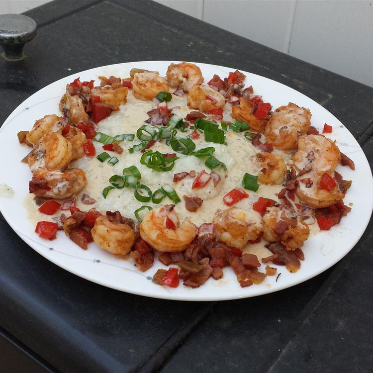

Home About Us Contact Us
Shrimp & Grits
This shrimp and grits Louisiana-style recipe is probably the best shrimp and grits recipe you will ever make!
Ingredients
- 1 cup water
- 6 tablespoons grits
- 2 tablespoons olive oil
- 1/2 cup diced taso ham
- 2 tablespoon diced onion
- 2 tablespoon diced green bell pepper
- 20 medium shrimp, peeled and deveined
- 1/4 cup white wine
- 1 cup heavy whipping cream
- salt and pepper to taste
- 1 tablespoon chopped green onion, green parts only
Instructions
- Bring water and 1 pinch salt in a saucepan to a boil; slowly stir in grits, stirring constantly. Reduce heat to low; simmer grits until tender and smooth, about 20 minutes, stirring often. Set aside and keep warm.
- Heat olive oil in a large skillet over medium-high heat. Add ham; cook and stir until crisp. Stir in onion and bell pepper; cook until onion is translucent, about 4 minutes. Add shrimp; cook until just pink, 30 to 45 seconds. Transfer shrimp to a plate; set aside.
- Pour wine into the skillet; stir, scraping the browned bits of food off the bottom of the skillet with a wooden spoon. Slowly add cream, reduce heat to low, and simmer until thickened, about 10 minutes. Season with salt and black pepper.
- Divide grits between 2 serving plates; line edges of plates with 10 shrimp. Pour cream sauce over grits; sprinkle servings with green onions.
Home About Us Contact Us